Lecture 1
Introduction
Welcome back to lecture 1! In lecture 0, we introduced HTML, CSS, and Sass as tools we can use to create some basic web pages. Today, we’ll be learning about using Git and GitHub to help us in developing web programming applications.
Git
-
Git is a command line tool that will help us with version control in several different ways:
- Allowing us to keep track of changes we make to our code by saving snapshots of our code at a given point in time.
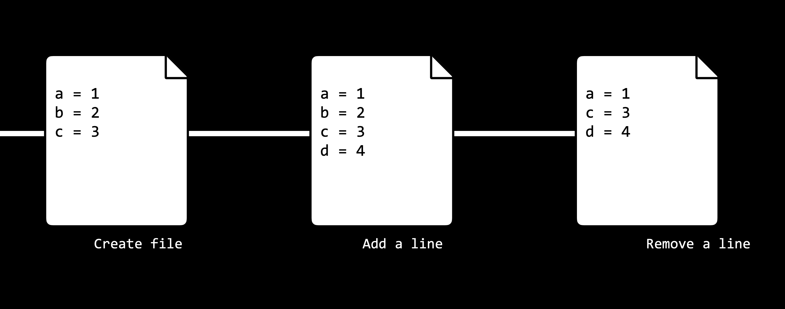
- Allowing us to easily synchronize code between different people working on the same project by allowing multiple people to pull information from and push information to a repository stored on the web.
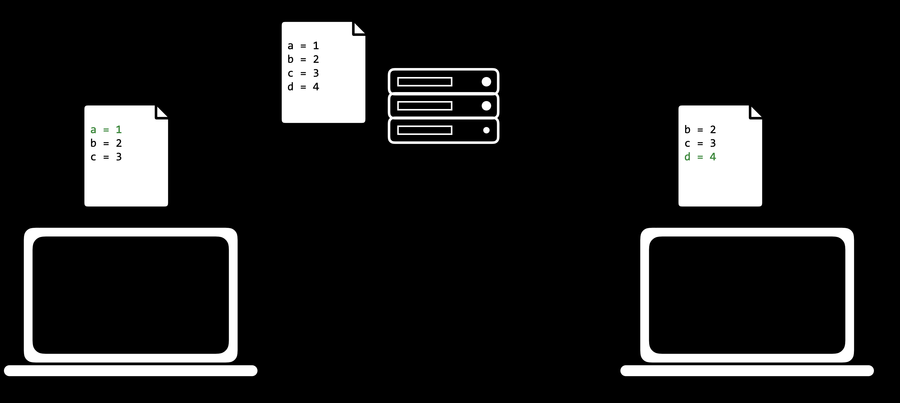
- Allowing us to make changes to and test out code on a different branch without altering our main code base, and then merging the two together.
- Allowing us to revert back to earlier versions of our code if we realize we’ve made a mistake.
- In the above explanations, we used the word repository, which we haven’t explained yet. A Git repository is a file location where we’ll store all of the files related to a given project. These can either be remote (stored online) or local (stored on your computer).
GitHub
- GitHub is a website that allows us to store Git repositories remotely on the web.
- Let’s get started by creating a new repository online
- Make sure that you have a GitHub account set up. If you don’t have one yet, you can make one here.
- Click the + in the top-right corner, and then click “New repository”
- Create a repository name that describes your project
- (Optional) Provide a description for your repository
- Choose whether the repository should be public (visible to anyone on the web) or private (visible just to you and others you specifically grant access)
- (Optional) Decide whether you want to add a README, which is a file describing your new repository.
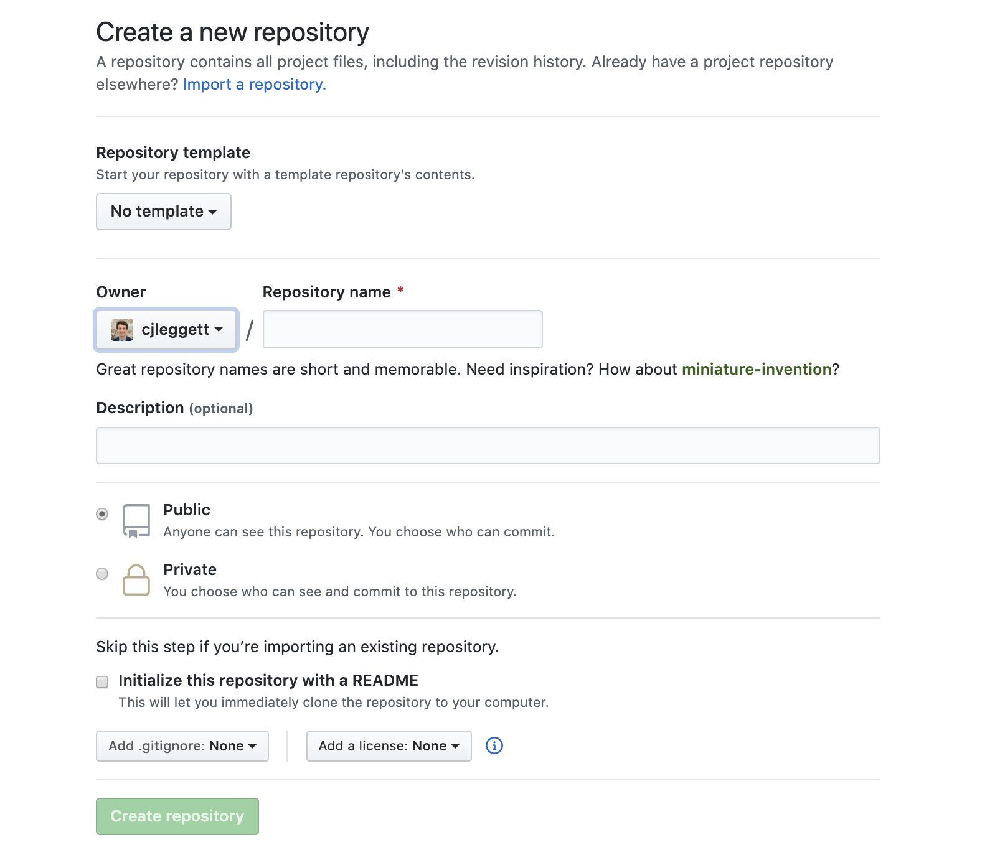
- Once we have a repository, we’ll probably want to add some files to it. In order to do this, we’ll take our newly created remote repository and create a copy, or clone, of it as a local repository on our computer.
- Make sure you have git installed on your computer by typing
gitinto your terminal. If it is not installed, you can download it here. -
Click the green “Clone or Download” button on your repository’s page, and copy the url that pops down. If you didn’t create a README, this link will appear near the top of the page in the “Quick Setup” section.
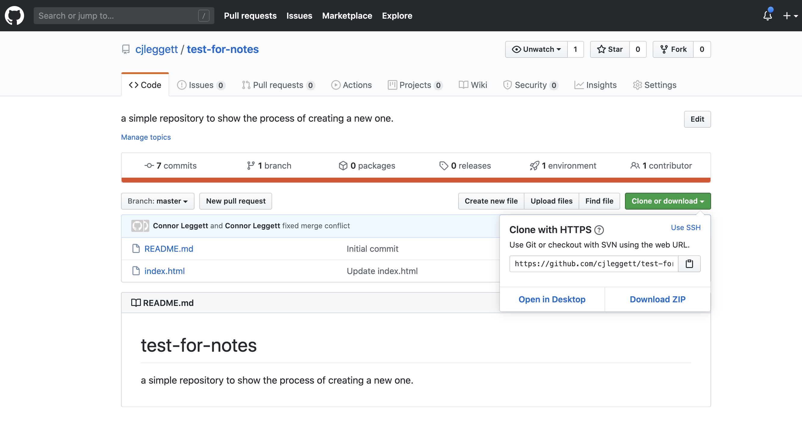
-
In your terminal, run
git clone <repository url>. This will download the repository to your computer. If you didn’t create a README, you will get the warning:You appear to have cloned into an empty repository.This is normal, and there’s no need to worry about it.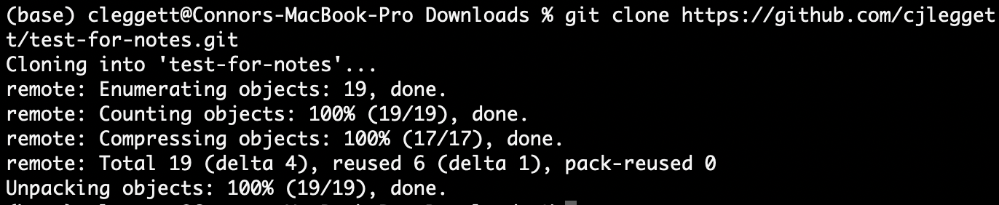
- Run
ls, which is a command that lists all files and folders in your current directory. You should see the name of the repository you’ve just cloned. - Run
cd <repository name>to change directory into that folder. - Run
touch <new file name>to create a new file in that folder. You can now make edits to that file. Alternatively, you can open the folder in your text editor and manually add new files. -
Now, to let Git know that it should be keeping track of the new file you’ve made, Run
git add <new file name>to track that specific file, orgit add .to track all files within that directory.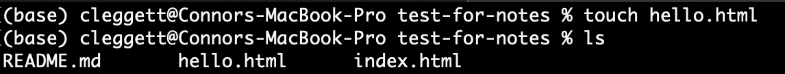
- Make sure you have git installed on your computer by typing
Commits
- Now, we’ll start to get into what Git can be really useful for. After making some changes to a file, we can commit those changes, taking a snapshot of the current state of our code. To do this, we run:
git commit -m "some message"where the message describes the changes you just made. - After this change, we can run
git statusto see how our code compares to the code on the remote repository - When we’re ready to publish our local commits to Github, we can run
git push. Now, when we go to GitHub in our web browser, our changes will be reflected. - If you’ve only changed existing files and not created new ones, instead of using
git add .and thengit commit..., we can condense this into one command:git commit -am "some message". This command will commit all the changes that you made. - Sometimes, the remote repository on GitHub will be more up to date than the local version. In this case, you want to first commit any changes, and then run
git pullto pull any remote changes to your repository.
Merge Conflicts
- One problem that can emerge when working with Git, especially when you’re collaborating with other people, is something called a merge conflict. A merge conflict occurs when two people attempt to change a file in ways that conflict with each other.
- This will typically occur when you either
git pushorgit pull. When this happens, Git will automatically change the file into a format that clearly outlines what the conflict is. Here’s an example where the same line was added in two different ways:
a = 1
<<<<< HEAD
b = 2
=====
b = 3
>>>>> 56782736387980937883
c = 3
d = 4
e = 5
- In the above example, you added the line
b = 2and another person wroteb = 3, and now we must choose one of those to keep. The long number is a hash that represents the commit that is conflicting with your edits. Many text editors will also provide highlighting and simple options such as “accept current” or “accept incoming” that save you the time of deleting the added lines above. - Another potentially useful git command is
git log, which gives you a history of all of your commits on that repository.
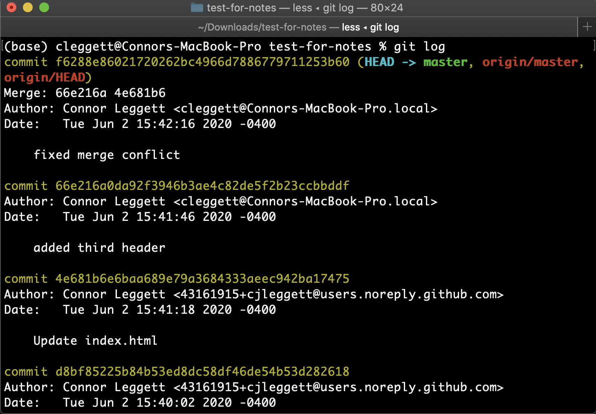
- Potentially even more helpful, if you realize that you’ve made a mistake, you can revert back to a previous commit using the command
git resetin one of two ways:-
git reset --hard <commit>reverts your code to exactly how it was after the specified commit. To specify the commit, use the commit hash associated with a commit which can be found usinggit logas shown above. -
git reset --hard origin/masterreverts your code to the version currently stored online on Github.
-
Branching
After you’ve been working on a project for some time, you may decide that you want to add an additional feature. At the moment, we may just commit changes to this new feature as shown in the graphic below
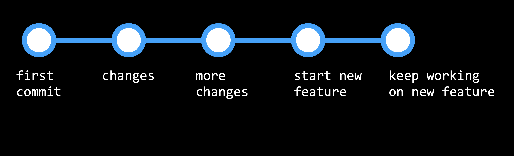
But this could become problematic if we then discover a bug in our original code, and want to revert back without changing the new feature. This is where branching can become really useful.
- Branching is a method of moving into a new direction when creating a new feature, and only combining this new feature with the main part of your code, or the main branch, once you’re finished. This workflow will look more like the below graphic:
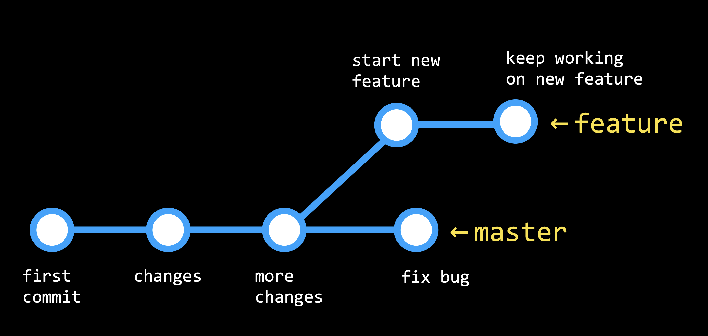
- The branch you are currently looking at is determined by the
HEAD, which points to one of the two branches. By default, the HEAD is pointed at the master branch, but we can check out other branches as well. - Now, let’s get into how we actually implement branching in our git repositories:
- Run
git branchto see which branch you’re currently working on, which will have an asterisk to the left of its name.
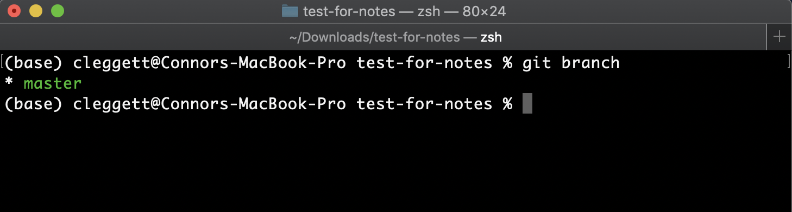
- To make a new branch, we’ll run
git checkout -b <new branch name>
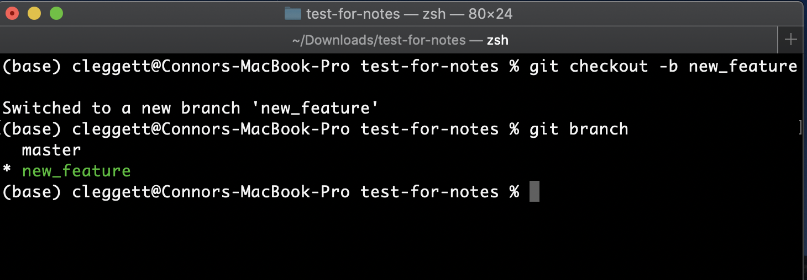
- Switch between branches using the command
git checkout <branch name>and commit any changes to each branch. - When we’re ready to merge our two branches together, we’ll check out the branch we wish to keep (almost always the master branch) and then run the command
git merge <other branch name>. This will be treated similarly to a push or pull, and merge conflicts may appear.
- Run
More GitHub Features
There are some useful features specific to GitHub that can help when you’re working on a project:
- Forking: As a GitHub user, you have the ability to fork any repository that you have access to, which creates a copy of the repository that you are the owner of. We do this by clicking the “Fork” button in the top-right.
- Pull Requests: Once you’ve forked a repository and made some changes to your version, you may want to request that those changes be added to the main version of the repository. For example, if you wanted to add a new feature to Bootstrap, you could fork the repository, make some changes, and then submit a pull request. This pull request could then be evaluated and possibly accepted by the people who run the Bootsrap repository. This process of people making a few edits and then requesting that they be merged into a main repository is vital for what is known as open source software, or software that created by contributions from a number of developers.
-
GitHub Pages: GitHub Pages is a simple way to publish a static site to the web. (We’ll learn later about static vs dynamic sites.) In order to do this:
- Create a new GitHub repository.
- Clone the repository and make changes locally, making sure to include an
index.htmlfile which will be the landing page for your website. - Push those changes to GitHub.
- Navigate to the Settings page of your repository, scroll down to GitHub Pages, and choose the master branch in the dropdown menu.
- Scroll back down to the GitHub Pages part of the settings page, and after a few minutes, you should see a notification that “Your site is published at: …” including a URL where you can find your site!
That’s all for this lecture! Next time, we’ll be looking at Python!